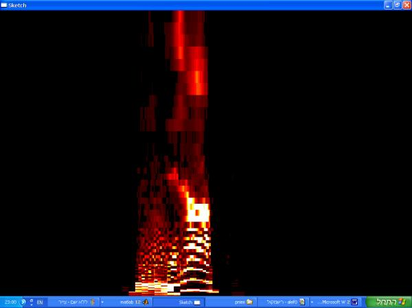
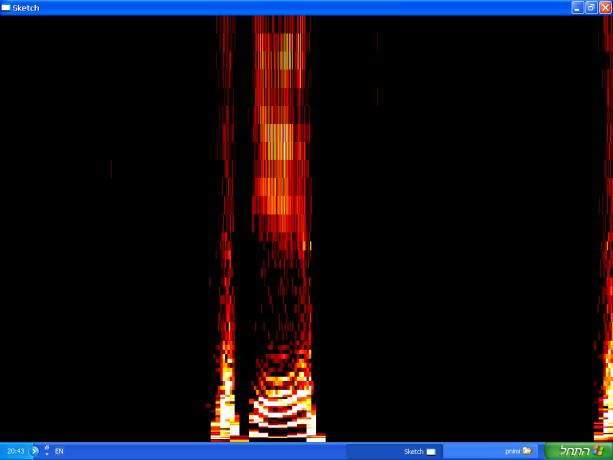

בס"ד
" וכל העם רואים את הקולות ..."
שמות כ ,
טו
הייתכן ?
פטנט ישראלי מבוסס על עיבוד אות חדשני מאפשר
לבצע "הדמיה אקוסטית" וחושף מבחינה מדעית
מעט מגודל מעמד מתן תורה
מאת
יעקב גוגנהיים ,מהנדס הממציא
1)
מבוא:
איך ניתן לראות קולות ? מה הקשר בין שמיעה לראיה ?
אנסה
לתאר את הסוגיות שהועלו לפני בהתחלת המחקר 4 שנים טרם הגשת הפטנט מס' 125296 הנקרא
"הדמיה אקוסטית" (Acoustical
Imaging):
א) מה ראו בני ישראל ?
רש"י מסביר פסוק זה "ראו את הנשמע ", לפי פרשן אחר ה-"כלי יקר" בני ישראל ראו את האותיות זאת אומרת שהדיבור אלוקי הצטייר במרחב בציור האותיות של האלף-בית.
ב) במידה והם ראו את האותיות, איזה אותיות ראו ? אותיות בכתב עברי עתיק כפי שנמצאו בתגליות ארכאולוגיות או אותיות בכתב אשורי כפי שנשמר בספר תורה שלנו היום ?
בעניין זה יש מחלוקת בתלמוד, בגמרא "סנהדרין" : דעה אחת אומרת שהתורה נתנה בכתב עברי אבל כשחזרו מבבל חידשו וכתבו בכתב אשורי הנקרא כך כי בבל היא אשור ,ויש דעה מנגד גורסת שהתורה נתנה בכתב אשורי מלשון ישר וכשחטאו איבדו אותו כתב וכתבו בכתב עברי אבל כשחזרו מבבל חזר להם ידיעת הכתב האשורי עם היושר וכך ההלכה.
ג) האם ניתן לראות קולות ? באיזה ממדים להציג את הציור?
האם לייצר את הציור בתדר וזמן , או בזמן ועוצמה ? בצירים ליניאריים או לוגריתמיים?
איך אפשר לקבל עקומה כמו באות סמך עם קווים כמו ב SONOGRAPH .מכשיר ותיק זה מיועד לניתוח
הקול ומציג גרף במישור זמן (ציר X )- תדר (ציר Y ). המכשיר פועל בשני אופנים סותרים זה את זה: ברזולוציה טובה בזמן
הוא מפיק קווים אנכיים ,וברזולוציה טובה בתדר מפיק קווים אופקיים בלבד. מכשיר זה
מהווה בסיס רעיוני טוב: כראייה לכך בניתוח צפצופי ציפורים המכשיר מפיק גרף דומה
לציור של ציפור עף ! אך המכשיר די מוגבל .
ד) כמות המידע בתמונה אחת היא באין ערוך יותר גדולה מזאת שנקלטת בדיבור או במוזיקה .
לדוגמה: תמונה אחת של מצלמה צבעונית מורכבת מכ- 500 על
500 פיקסלים (אלמנט הרזולוציה נקרא pixel)
וכל פיקסל מוגדר באמצעות שלושת הצבעים הבסיסים red- green- blue עם8 סיביות (לפחות) לכן יש לנו כ- Megabits 6 בתמונה אחת ובסרט בקצב 25 Hz יש לנו 40milliseconds להציג את המידע
,ז"א שתף מידע של 50
Megabits/s. לעומת זאת לגבי שתף המידע הטיפוסי בקול, אפילו עם קצב דגימה של44Khz לאיכות מעולה לא נגיע ליותר מ-350-400Kbits/s .
יוצא שהיחס בין שתף התמונות לשתף הדיבור הוא כ- 100 ,
איך נציג את שתף התמונות בזמן אמת ?
ניתן להיעזר מבחינה רוחנית במה שכתוב בקבלה ובחסידות :
א) העולם נברא באותיות בלשון הקודש לפי פירוש הבעל שם טוב על הפסוק
"לעולם ה' דברך ניצב בשמיים" .
מזה אנו מבינים:
·
איכות ההתמרה
מקול לתמונה תיבדק לפי איכות הציור של האותיות
·
רק בלשון הקודש
נוכל לקבל את האותיות .בכל לשון אחרת לא ניתן לקבל קורלאציה בין התמונה לציור
ההסכמי של האות בלועזית (עובדה ששני ה- Phonemes
שנשמעים בצרפתית ובאנגלית לגבי האות
A שונים ).
ב) "ואתה מחיה את כולם" אל תקרא מחיה אלא "מהווה" דהיינו יש מאין ,
ואתה (א-ת-ה) הם האותיות מאלף ועד תיו ,והאות ה"א
היא 5 מוצאות הפה (הגרון ,החיך
,השיניים ,הלשון והשפתיים) מקור האותיות (רבי שנאור זלמן ב-"שער הייחוד
והאמונה").
יוצא ש-
5 מוצאות הפה מצמצמים את הקול ועושים בו ציור (התהליך דומה לתהליך הבריאה הכללי
:ההבל פה הוא מבחינת "אין" והאות מבחינת "יש" ,ז"א מה
שנתן לראות כתוצאה מהצמצום).
חמשת הקבוצות הן : א-ח-ה-ע מהגרון
\ ב-ו-מ-פ מהשפתיים \ ג-י-כ-ק מהחיך \
ד-ט-ל-נ-ת מהלשון \ ז-ס-ש-ר-צ מהשיניים.
ג) המעבר משמיעה לראיה במתן תורה הוא המעבר מגלות לגאולה בימות המשיח.
השמיעה קולטת קולות שהם מהות רוחנית יותר מצורת חפץ
גשמי, כי השמיעה פועלת בממד הזמן לעומת הראיה שפועלת בממדי המקום . לכן הראיה היא
יותר ודאית מהשמיעה, יותר מציאותית עד כדי כך ש"אין עד נעשה דיין" כי
העד כבר משוכנע ממה שראו עיניו ולכן אינו אובייקטיבי .
במתן תורה בני ישראל ראו אלוקות
,ראו את הרחוק
,את ה-"לא-מציאות" (כביכול) ,ראו את הרוחני בודאות של גשמי . זה מה
שיהיה בתקופת המשיח :יראהו באצבע ויגידו "אלוקנו זה" במציאות מוחשית של
ראיה.
מעבר זה הוא כמובן מעבר אדיר מבחינת כמות המידע הנקלט .
במקביל לדברי הרמב"ם ש-הוא (הבורא) היודע, הוא
המדע (הכוח לדעת) והוא הידוע ניתן אולי להגיד שהוא המידע כי הוא המשמעות של כל דבר
(מלשון דיבור),מה שמסביר:
א) חשיבות ההמצאה,
ב) קושי המעבר וגודל המאמץ הטכנולוגי הנדרש בכמות
ומהירות החישוב
2)
תוצאות
ההדמיה אקוסטית שלנו : הקול מייצר את צורת האות שהוא מבטא
חשוב להודות שהפרסום הראשון במחקר מסוג זה היה
בעיתון-"מקור ראשון" שגילה את תמונות האותיות א- ב- ס- ע- פ- צ ,שנתקבלו
על ידי מר חיים אלבז ומר אלישע זרביב שניצלו התמרה ידועה וישנה (מ- 1822 )
בשם FOURIER Transform
בוורסיה (SHORT
F.T.) SFT .
התמרת Fourier
דורשת רזולוציה קבועה בזמן ΔT ובתדר ΔF, לכן היא אינה מתאימה לשינוים מהירים: Non
stationary Signals כמו Voice Pitch,
ולכן היא איננה מתאימה לניתוח הקול .
עליה מבוסס ה-Sonograph עם הבעיות שכבר צוינו לעיל .
אפילו ה- Short Time Fourier
Transform של Gabor Denis
אינה מתאימה בגלל הרזולוציה
קבועה ΔT בלתי תלויה בתדר .
בניגוד לגישה זו שמנצלת כלים קיימים בעיבוד אות לקבלת
תמונה סטטית ,גישתי במשך 4 שנים שקדמו לפרסום שלהם ,הייתה להמציא את האלגוריתם
המיוחד וההצגה המתאימה לתכונות האוזן והעין שתפעול גם בזמן אמת ולא רק בתמונות
סטטיות עם פתרון אומנותי להצגת המוזיקה .
חשוב לציין שבתמונות שנציג אין שום עיבוד נוסף להתמרה
המבליט את מה שרוצים לקבל
(כמו בשיטת רשתות עצביים = Neural
Network שמסוגלות לחפש צורת האות שהרשת למדה מראש ) , אלא יש פה התמרה
מתמטית כאילו "פשוטה" , המתחשבת בנתונים פיזיולוגיים של החושים ,הפועלת
על כל סיגנל כפונקציה של הזמן S(t) והופכת אותו לתמונה.
למען היושר, נציג לפני כל תמונה, את S(t) : הסיגנל הנקלט מה- Microphone
כפי שהוא נראה
ב- Oscilloscope
,ולאחר מכן התמונה כפי שנתקבלה מהאלגוריתם שלנו כשהציר אופקי (X.) הוא הזמן אבל הזמן זורם פה מימין לשמאל כמו בכתב העברי !
(הפוך
מהכיוון שבגרף Oscilloscope).
הדבר הוא בעצמו פלא
ודורש הסבר ,כי אם לא עושים
את זה מקבלים ציור אחר של האות סימטרי מימין לשמאל כמו בראי .
הסבר אפשרי על פי הקבלה : כתוב "עולם חסד יבנה
" והחסד הוא בימין והגבורה בשמואל,
בידוע שהעולם נברא באותיות, ברור אם כן שהאותיות יוצאות
מימין לשמואל.
בעומק יותר הבל הפה הוא מבחינת אור, התפשטות, והאותיות
מבחינת כלים ,
המעבר מאור לכלי הוא מחסד לגבורה ,מימין לשמואל .
בציר Y התדר עולה מהנמוכים למטה
עד הגבוהים למעלה כפי שההרגשה נפשית מחייבת.
להבנת התמונות יש להתרכז באמצע תחום התדרים ולהנחית
מנטלית את הנמוכים הבאים מהחזה.
מאחר שראו את הקולות באש מצאתי לנכון להציג את העוצמות
משחור ללבן בדרגות "חום".
·
אות
עין "
ע
"
הסיגנל הנקלט מה-
Microphone
התמנה לאחר ההתמרה שלנו : הציור הוא
ע
של האות "עין" !
הזרוע =הקו מצד שמואל ,מתקבלת כל פעם מה- Phoneme
" ין =
in
" מהמילה "עין"
כשהצד הגרעוני,
Phoneme
â
, נותן את הזרוע ימינית
(הראשונה בזמן כי אמרנו שכיוון הזמן פה הפוך מזה של הגרף-
Microphone
).
·
אות
פה "
פ
"
רואים ב-Oscilloscope
שבהתחלת הזמן יש "pitch" (שיא) חזק שאין
ביכולת
ה-Fourier Transform
לנתח כי תופעה כזאת אינה מחזורית
התמונה לאחר ההתמרה שלנו : הציור הוא של האות
פ
הקו מצד ימין הוא החזית של הקול ה-"Pitch " בעל עוצמה חזקה ,למרות זאת הוא מוצג נכון.
·
אות
מ"מ

הצורה כמעת סימטרית
התמנה לאחר ההתמרה שלנו :הציור הוא של האות אבל
ם
סופית ! כי הוא מורכב משני
Phonemes
זהים לכן הוא כל כך מרובע !
אות בית :
"ב "
·
אות "
ז
"
האות "ז" ברורה ,הבסיס ,הקיים בכל הקולות, נובע מהתדרים הנמוכים הבאים
מהחזה.
אות "ג
"
במבטא ”
djimel
” תימני
מה שמיוחד באות זה שנתן לקבל את הציור שלה בכתב אשורי
רק במבטא תימני של "דגימל"
(djimel)
ולא כ-"גימל"
רגיל ! הנה כמה ציורים שקבלנו :
נזכיר שהתימניים מבחינים בין
guimel
,rimel, djimel
רק ב-
djimel
מתקבל הציור הנכון.
עוד כמה דוגמאות:
אות
"א"
לא קיבלנו ציור ברור לגמרי ,אבל רואים את הקו אלכסוני
והיוד העליון ,היוד התחתון והצורה ריבועית
ברורים יותר בתמונות הבאות (קשה להשיג את
ה-"פלא=אלף" !)


עוד אלף
אות
"ס"
העיגול התחתון קיים בין השורות 400 ל-600 אבל אינו נסגר
למעלה. (לא להתייחס להרמוניות
בתדר פי שתיים שממשיכים את העמוד 240 מעל לאופק 400 ).
עוד ציורים שהתקבלו מאות "ס
"
נזכיר עוד שלהבנת התמונות יש לסלק את העוצמות החזקות בתדרים נמוכים הבאות מהחזה
אות ש
"שין"
האות מופיעה גבוה בתדרים
עליונים ושלוש הקווים צפופים בגלל
הופעתם בזמן קצר מאוד
לכן ,למרות שכל קו אנכי בציור מיצג 5 milliseconds ,לא נתן להפריד בניהם.
אות
ט

ההפסק הקטן בזמן בין ה-
Phonemes
"
Tey
ל-"
it
" חותך קצת את התמונה אבל
התנועה עיגולית ברורה.
אות "צ
"
הפיקסלים הלבנים הם בעלי העוצמה החזקה ,ניתן לעקוב על העקומה מהבסיס עד הענף
השמאלי של
ה-"צדי" כשהענף הימיני מתחבר ל-"גזע" . הציור הוא צפוף בזמן
אבל ברור
3) מסקנות
הצגנו 11 אותיות וכיסינו את חמשת הקבוצות: 2 מהגרוניות : ע , א ; 3 מהשפתיים : פ, מ , ב
1 מהחיך : ג ;
1 מהלשון : ט ; 4 מהשיניים :
ז, ס, ש, צ
לפי הניסיון נתן להגיד שהציור המתקבל הוא עדין ,רגיש לשינוי
עוצמה (למרות מנגנוני **
AGC)
ודורש מבטא מדויק ומתוזמן היטב .דברים אלו מעידים גם על
דיוק ורגישות ההתמרה המגלה אותם
ומרמזים על אפשרות יישומית כעזרה לדיבור החרשים
שיקבלו Feedback
חזותי לתיקון ההבטה.
למען האמת אוסיף כי יש אותיות שקשה להשיגן: למשל האות
"ה" ,אות קליל ,הבל הפה לפי הקבלה.
ומשום מה
ה-"ל" וה-"כ" מופיעות בזמן הפוך (ימין- שמואל) ! .
כשמסתכלים על התוצאות בכללותן ,אני מדגיש בכללותן כי לא
משתכנעים מגרף אחד או שתיים , הקורלאציה המצטברת מ-11 הגרפים שהצגנו מגלה את הפלא:
הציור דומה לאות.
איך העבירים העתיקים ידעו על מישור זמן – תדר שבו מתקבל
הציור ?
האם הם התבטאו
על פי הידיעה עמוקה זו כידיעה פנימית בתת-מודע (או בעל מודע ) שלהם?
האם הלשון הקודש היא שפת המציאות המתאימה באופן טבעי
למבנה האוזן עם סולם התדרים שלה ולכן רק בלשון הקודש התופעה קיימת כשלוקחים בחשבון
סולם זה במישור זמן-תדר?
יתכן שנגרמו שינוים בלשון העברית בהשתלשלות הדורות ולכן
יש אותיות שקשה לקבל ציורן , איזה שינוים איננו יודעים .
בסך הכל ,לפי כלל הממצאים שהצגנו קיימת קורלאציה מצטברת
מעל כל מקריות ולכן יתכן מאוד שבני ישראל ראו את הקולות , את הנשמע ,בציור אותיות
בכתב האשורי !
לנו זה אומר שיש ממשות בדיבורו של האדם (ידוע שבזה הוא
נבדל מבעלי חיים)
דיבורו דומה קצת לדבורו של הבורא שמהווה כל
"דבר" : "שהכל נהייה בדברו" ,גם אנחנו מייצרים צורות באוויר
העולם ואולי כוחות או מלאכים בברכה מקרב לב.
זה אולי המשמעות של הפסוק "כל מה שיוצא מפיחה תעשה
" (בנפעל)
אין ספק שמה שגילנו בצד הגשמי של המעמד עם הכלי שהמצאנו
הוא אפסי ביחס לעומק התופעות שהתרחשו אז ב-"מפגש מסוג ..אחר" , מפגש עם
בורא העולם ,במתן תורה !
**AGC=Automatic Gain Control